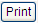

General Ledger Export To BECS: Disbursements (ABA)
From Help wiki
Main Page → Accounts / Export / BECS → Disbursements(ABA) → BECS Bank Account Setup | BECS Troubleshooting
Contents |
Overview
Generate an aba file here to pay claim reimbursements into each driver’s bank account. Each un-paid claim that has been posted and marked as a reimbursement will be added to this file.
The ABA file page details how the file is compiled.
ABA files can also be generated for Payments / Periodic and Receivables / Receipts.
Visit the Australian Payments Clearing Association website: [1] for more information.
The following programmer blog is also helpful about the aba file layout: [2]
Record Selection
Claims are selected for reimbursement and added to the next batch here if;
- Contracts / Contract "Company" is the same as that selected or shown
- Contracts / Claims "BSB" and "Account Number" are recorded correctly
- Contracts / Claims "Reimbursement?" is checked
- Contracts / Claims "Stop BECS" is un-checked
- Contracts / Claims "Status" is 'Posted'
- The claim is not already linked to in an existing batch
Workflow
Visit the follow process pages;
- Create and post a claim
- Claims may also be entered by drivers in the Driver Portal
- Post a claim created by a driver or employee or use in combination with the
- Auto Post on Claims function
- Use Stop BECS to prevent posted reimbursement claims from being paid
- Generate an ABA banking file to reimburse claims
Filters
| Filter | Type | Description | [table]field |
|---|---|---|---|
| BECS Id | Lookup | Lookup or enter the batch number of an existing batch. | [gb_becs]becs_id |
| Button | Click this when you want to create a new batch. |
Field Descriptions
| Field | Type | Description | [table]field |
|---|---|---|---|
| BECS ID | Display | This is blank if you are creating a new batch. If you are reviewing an existing batch, the "BECS ID" is displayed. | [gb_becs]becs_id |
| ABA Type | List Box | Two options are available – ‘Client’ and ‘Company’.
Where there are no client bank accounts, the list box will not be required, and ‘Company’ will be defaulted in. It is not editable. | [gb_becs]aba_type |
| Bank Account | List Box | This field will be enabled when “Bank Account Type” equals ‘Company’.
Where “Bank Account Type” equals ‘Client’, field is disabled, and no editing options made available | [gb_becs]bank_account_id |
| Client Code | Lookup | The lookup will only list the Clients that have the flag ‘Client Bank Account’ checked ON. ie: [sp_client_packaging_defaults]client_bank_account_enabled_flag = ‘yes’ | [gb_becs]client_id |
| Control Invoices | Num | Calculates or displays the number of invoices that will be paid. ie: payments and / or approvals | [gb_becs]control_invoice_count |
| Control Items | Num | Calculates or displays the number of rows that are in the selection for posted approvals and payments | [gb_becs]control_item_count |
| Control Total | Num | Calculates or displays the total amount of the batch. | [gb_becs]control_total |
Action buttons
| Field | Description |
|---|---|
| New | Click this when you want to create a new batch |
|  | The content of the BECS export file can now be printed before being created. Where there is no data to report, the button will be inactive. |
| Will be active when data is available to export. Select to create export file. Where multiple bank accounts in use, a bank account must be selected to activate the button. | |
| Select to return to BECS export page to allow process to begin again with no action being executed. |
Output Options
| File Name | Description |
|---|---|
| reimbursements_preview | Click on to generate a report that lists the reimbursements that will be made if you create this batch. The records are shown by item, so the number of records you see will match the "Control Items" number shown for the batch on the screen. This report can be output as a Office(xls) file or a Text(CSV) file. |
| reimbursements_[becs_id] | Select a stored "BECS Id" and click . This report lists the reimbursements contained in this batch. The records are shown by item, so the number of records you see will match the "Control Items" number shown for the batch on the screen. Payments are made by Approval ID, so these rows will be grouped up for payment. This report can be output as a Office(xls) file or a Text(CSV) file. |
| reimbursements_aba_[becs_id].aba | Click Export for the displayed "BECS Id". Upload this aba file into your banking software to make the reimbursement payments to drivers. |
Validations and Alerts
Below are alerts you may see during this process and the reasons why they have happened. In most cases, you should be able to identify a data error and once corrected, Save or Post the record.
| Alert | Comments |
|---|---|
| On navigation to the Accounts / Export / BECS / Reimbursements (ABA) screen | |
| Banking details require set up! | There are no bank account records in your system. Contact your Account Manager to help you set up your banking details and configure this feature. |
| New | |
| Nothing to reimburse! | There are no outstanding claims to reimburse. Click on OK to be returned to the screen. |
| Create | |
| Warning! Reimbursements cannot be exported for the following drivers: | The listed drivers have missing bank details. This error can occur if a user has removed the Driver's banking details after a claim has been raised and posted, but has not yet been paid. To correct these errors, go to the Drivers / Finances tab and add or correct the details in the "BSB Number" and "Bank Account Number" fields for the listed drivers. Up to eight (8) driver records can be displayed on the alert message pop-up. If more than eight drivers have missing bank details, they will show progressively as displayed records are corrected and the invalid list reduces. Note that bank account numbers can only be 9 characters long. If there are driver records that you cannot update at this time, you can still create a file for the valid records by clicking Create. Claims that have missing bank details will be skipped. The invalid records will be displayed again the next time you create a reimbursements file. |
| Warning! There are reimbursements due for export but none can be | This alert occurs where the listed driver or drivers have missing bank details (like the alert above) and there are no valid records that can be selected to create a reimbursement file. I.e. all the claims that should be reimbursed are linked to drivers with missing bank details. |
| Export | |
| Print failed, check client banking details! Client:{given_name} {surname} | Go to the Drivers / Finances tab and add or correct the details in the "BSB Number" and "Bank Account Number" fields for the listed drivers. |
| File cannot be generated. Contact Support | Since this batch was originally created, the stored aba file has been corrupted and can not be re-created. This scenario could happen if multiple bank accounts have been set-up since the batch was created, which means due to the data constraints, the file can no longer be reconstructed automatically. |
System Notes
- (DEV-21350) Create BECS / Disbursements (ABA) screen Live dd/mm/2021

{kind=link}
{kind=link}